Kodi
Friendly AI companion for autistic children and their caregivers
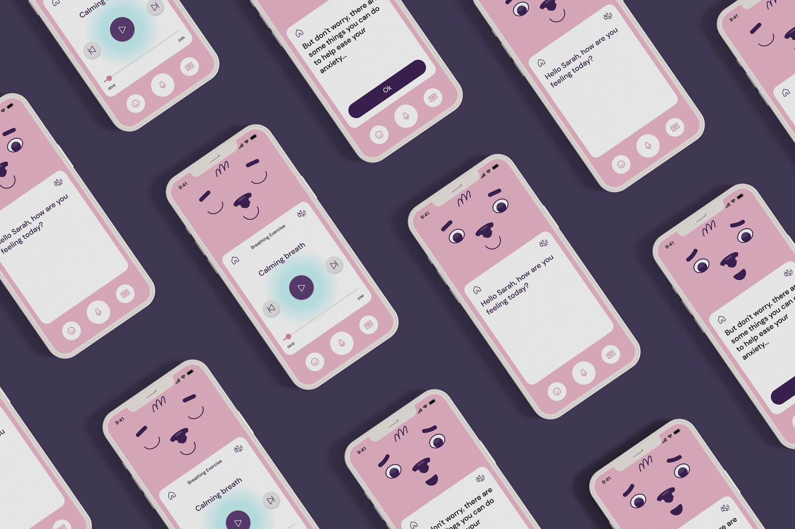
Autistic children face daily challenges across life.
One in 31 children in the United States is autistic. While symptoms vary, common challenges include sensory processing, cognitive rigidity, anxiety, and repetitive behaviors. These can create barriers across daily life, from education to access to public transportation.
Understanding the lives of autistic communities.
To better understand the autistic communities, I analyzed 9 videos and 60 posts from online community groups that captured their daily lives.
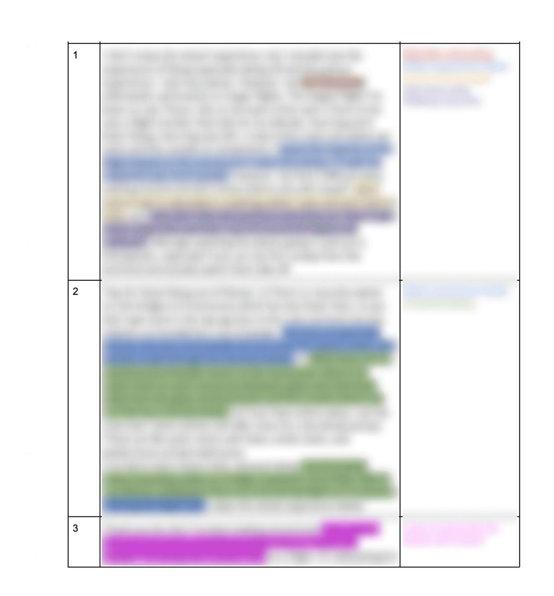
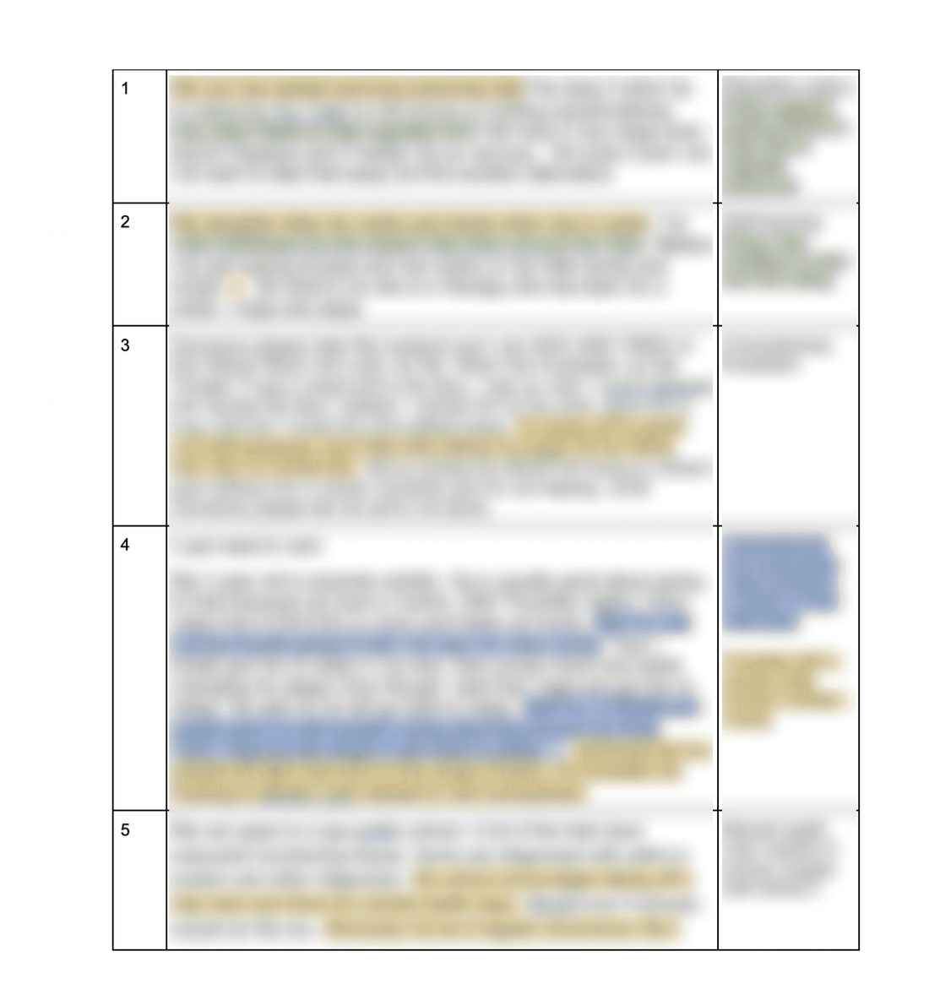
Observation notes from the online ethnography, coded through thematic analysis (blurred for privacy).
Loud noises, flashing lights, busy crowds, and changes to the plan trigger overstimulation.
“Having to face these triggers, especially on a regular basis, comes with the increased chance of a meltdown or shutdown — something that every autistic person will want to avoid.”
Scared of being alone, anxiety, and difficulty interacting with strangers.
“I’m scared and I can’t do it. I’m never alone in public spaces.”
Repetitions to learn something, and repetitive routines and actions.
“We’ve repeated it for a month now and he is getting better and better.”
The potential of AI chatbot.
“AI and robots are great tutors for autistic children because they can repeat instructions, stories and answers numerous times, without getting fatigued.”
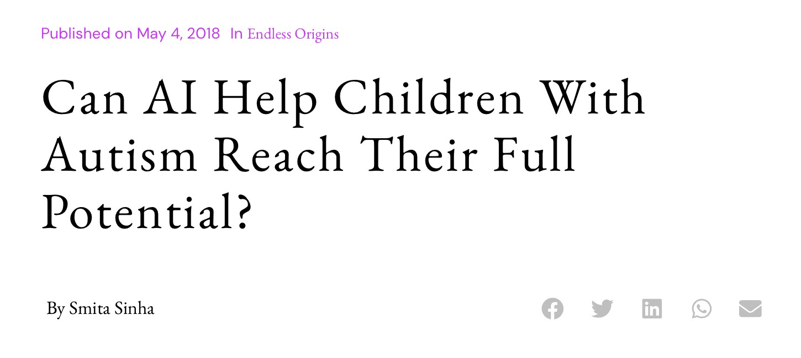
Large language models (LLMs) have the potential to support autistic children through their ability to engage in natural conversation without constraints. Combining this with our research findings, we began brainstorming designs for an AI companion app to support children during transitional moments.
· Multiple input options (speech, text, etc.)
· Being able to input child’s current feelings
· Ability to speak and show written responses
· Contextual support and emotional connection
· Ability to create events that buddy can be aware of
· Ability to interpret child’s needs based on conversation
The app is paired with a customizable case that adds additional sensory elements. The screen acts as the character face while the case adds a physical comforting body.
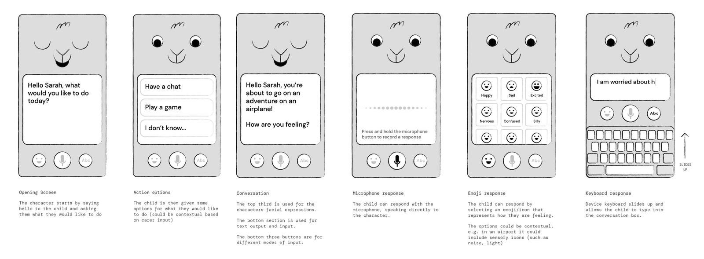
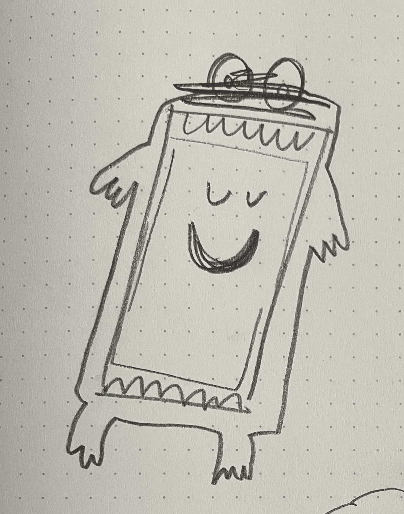
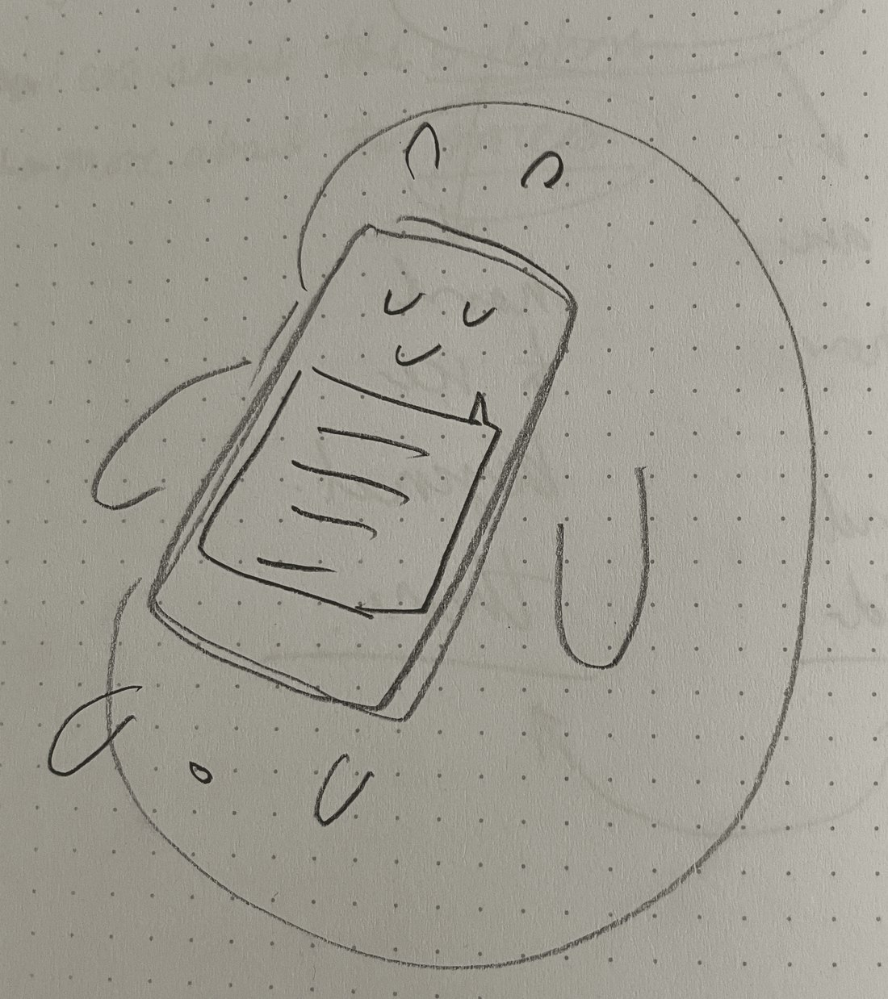
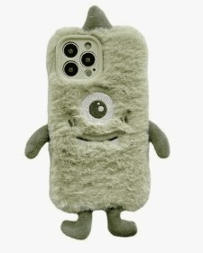
Case references — a soft, customizable body that adds comforting sensory elements around the screen.
Finally meet… Kodi, a friendly AI companion for autistic children.
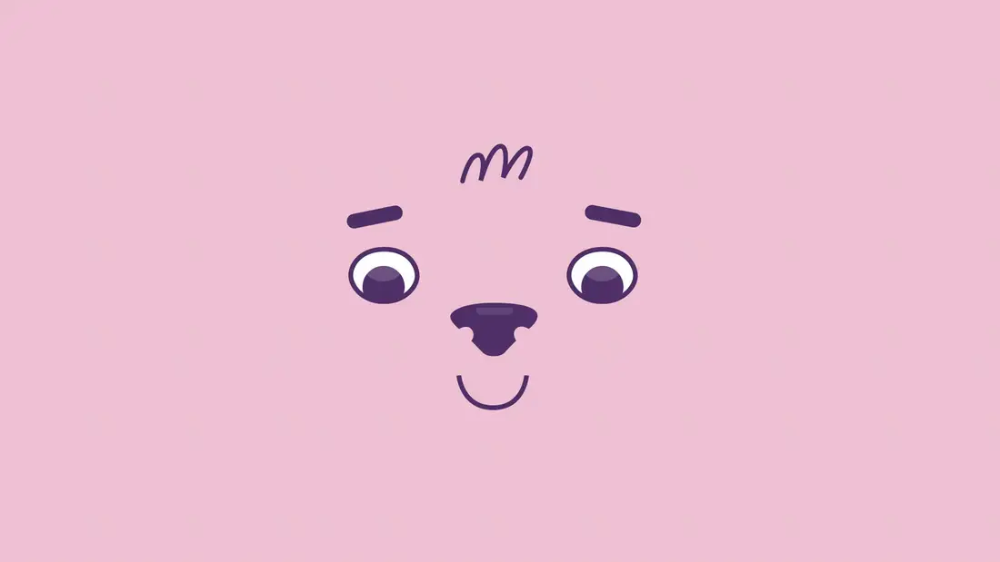
Users can express their feelings via emoji, voice, or keyboard, choosing the mode that feels most comfortable. Kodi responds to children’s inputs with an animated face that supports emotional connection.
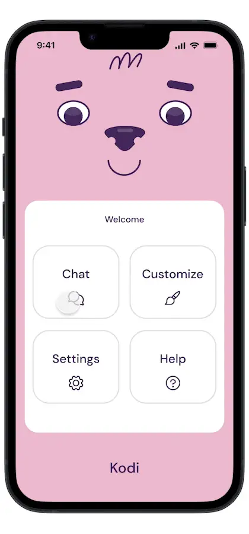
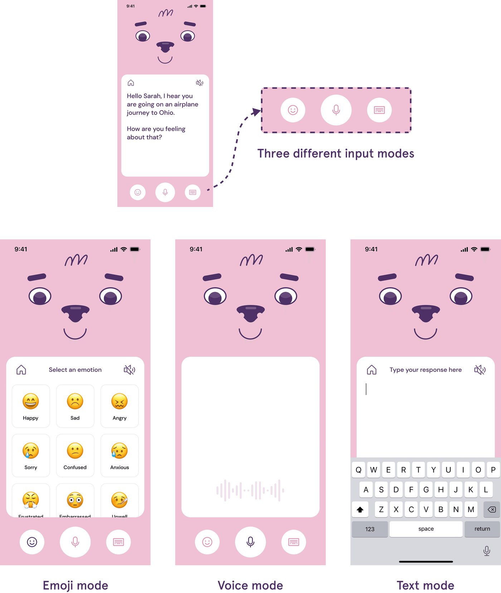
Based on children’s feeling, Kodi suggests some activities that can alleviate anxiety and promote coping mechanisms.
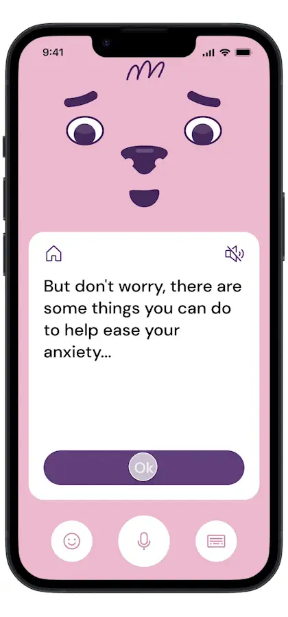
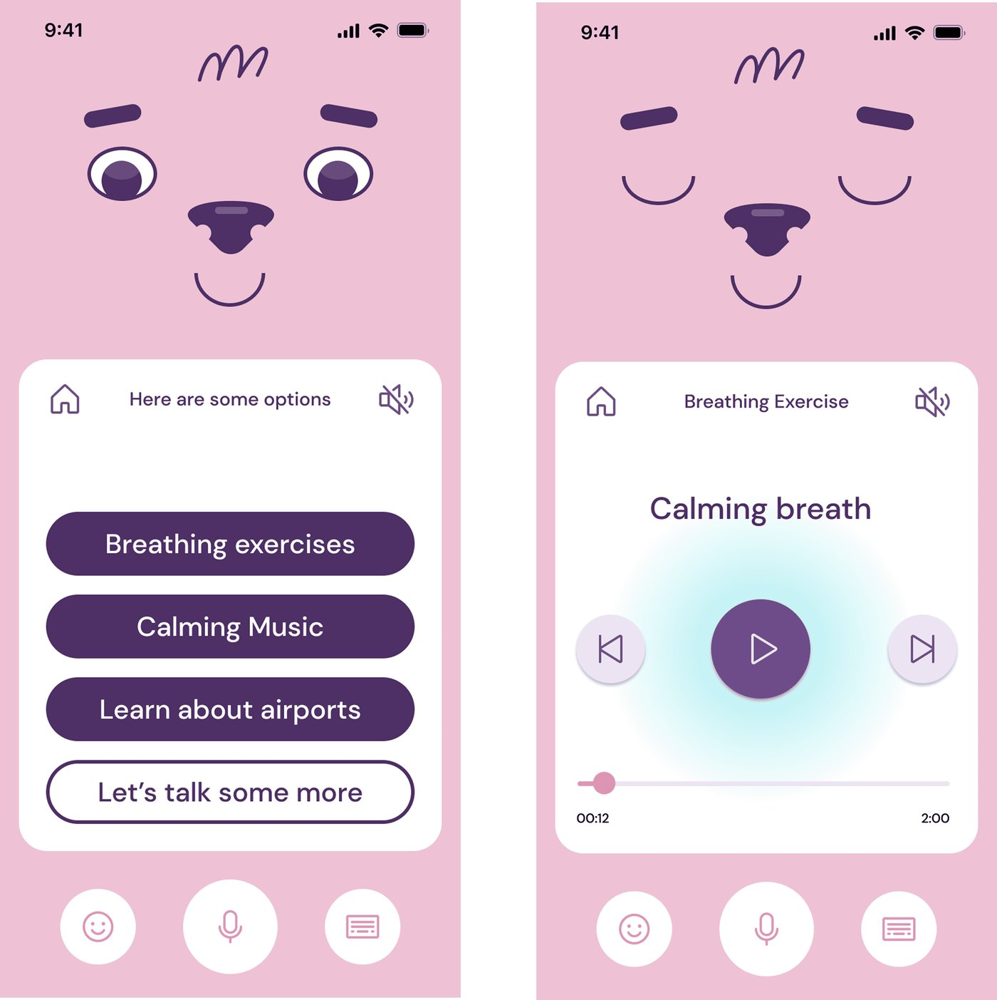
Parents and caregivers are informed of potential issues and can share calendar events to help Kodi respond with better context.
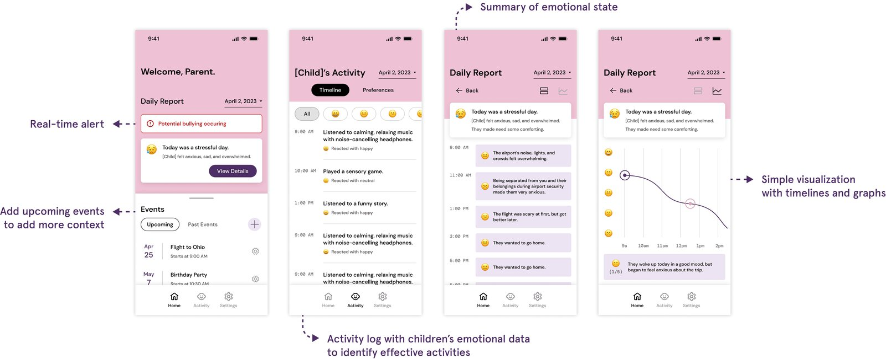
Testing Kodi with users.
We ran a user test through UserTesting to gather feedback on our design. Participants were adults aged 18 to 50 due to limited age options. Most participants answered that Kodi was very easy to use, especially for children to communicate their feelings. They picked Kodi’s animated facial expressions as their favorite feature.
Kodi was also presented at CSCW 2023. Check out the poster: Kodi (CSCW 2023 Poster) ↗